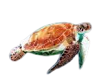

 As tartarugas marinhas existem há milhões de
anos, são solitárias e permanecem no ambiente marinho durante toda a sua vida, com exceção das fêmeas adultas
que buscam as praias para desovar. Esta característica do ciclo de vida dificulta os estudos do seu
comportamento. Por isso, grande parte do que se conhece sobre elas refere-se a estudos realizados com fêmeas em
praias de desova.
Apresentam visão, olfato e audição desenvolvidos, além de uma fantástica capacidade de orientação e natação.
Animais migratórios por excelência, vivem dispersas na imensidão dos mares e, mesmo assim, quando atingem a
maturidade sexual sabem o momento e o local de se reunir para a reprodução. Nessa época, realizam longas
viagens, por vezes transoceânicas, para voltar às praias onde nasceram e desovar.
Descansam na superfície da água quando estão em áreas profundas, ou no fundo do mar, sob rochas, em áreas
próximas à costa. Durante o descanso, geralmente mantem as nadadeiras dianteiras encolhidas para trás, sobre
o casco.

Especies
As tartarugas marinhas são criaturas
fascinantes e essenciais para a saúde dos ecossistemas oceânicos. Existem sete espécies de tartarugas marinhas
distribuídas pelos oceanos do mundo, cada uma delas com suas características únicas e desafios de
conservação.Cada uma delas desempenha um papel fundamental no equilíbrio dos ecossistemas marinhos e enfrenta
ameaças crescentes, como a poluição dos oceanos, pesca predatória e destruição do habitat. Conhecer e proteger
essas espécies é essencial para garantir um futuro sustentável para as tartarugas marinhas e para o nosso
planeta como um todo.
Descobrir mais

Conservação e ameaça
As tartarugas marinhas
enfrentam uma série de ameaças que afetam sua sobrevivência e bem-estar. É fundamental destacar essas ameaças em
um site dedicado a essas criaturas, juntamente com os esforços de conservação empreendidos por diversas
organizações em todo o mundo.
Descobrir mais